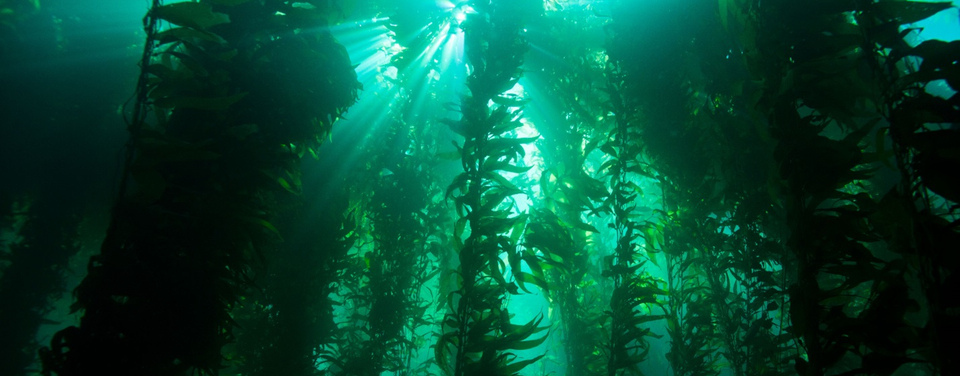

Home
Blacktip Reef Shark
Atlantic Puffin
Sea Otters
What food do sea otters eat?
Sea otters eat a varitey of foods, some of which are:
- Sea urchins
- Crabs
- Clams/Mussels

(Photo by Unknown from Wikimedia Commons)
You may notice that a lot of the foods otters eat have hard shells, so you may wonder, how do they open the shells? Turns out, like humans. they use tools! They use rocks as hammers to bash the hard shell of the animals they eat, and quite grumsomely, they rip of the claws of crabs to pry open their own shell!
How do sea otters interact with eachother?
One of the things sea otters are well known for is how they make "rafts"
(Photo by unknown from Animalia)

These are otters making a raft
Otters interact with eachother in mant different ways, one way that they interact is by making "rafts" with eachother. Sea otter "rafts" are when a group of sea otters hold hands while sleeping. They do this for many reasons, some of the reaons are:
-
To Stay Together
Like us, Sea otters make friends and make bonds! They dont want to get lost from eachother, so they hold hands so the waves do break them apart!
-
To Keep Heat
Sea otters dont have blubber to keep them warm in cold waters, they only have their fur. To solve this problem, sea otters stay with others to conserve their body heat!
Where do they live and why?
Sea otters live in kelp forests for many reasons. Kelp forests give them shelter from predators and it gives shelter for the animals they eat. Sea otters also stay here to rest, sometimes hooking themselves to the kelp.
(Photo by Unknown From Wikimedia Commons)

Fun Facts
- Sea otters are one of the only 6 animals that use tools!
- Sea otters have the thickest fur of any animal!
- They have a pouch of skin under their arm that they use as a pocket!

(Photo by Unknown From Wikimedia Commons)